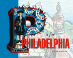

A primer on the City of Brotherly Love, illustrated by the children of Philadelphia, for the children of Philadelphia
A primer on the City of Brotherly Love, illustrated by the children of Philadelphia, for the children of Philadelphia


 A primer on the City of Brotherly Love, illustrated by the children of Philadelphia, for the children of Philadelphia
A primer on the City of Brotherly Love, illustrated by the children of Philadelphia, for the children of Philadelphia

|  |
P Is for PhiladelphiaSusan Kormancloth EAN: 978-1-59213-107-5 (ISBN: 1-59213-107-7) |
P Is for Philadelphia is a unique, alphabetic tour of the city and the region, illustrated by the area's public school children, who participated in a city-wide drawing contest.
From A is for Athlete to Z is for Zoo, all of the city's rich history is explored. P Is for Philadelphia includes entries on William Penn's arrival and historic treaty with the Delaware Indians, the city's heritage as the cradle of American liberty, as well as its food, sports teams, neighborhoods, and festivals.
Published to coincide with Read Across America Day 2005, this book will have the kind of impact on Philadelphia and the region that few children's books ever have. It belongs on the bedside tables of every child in the Delaware Valley and the bookshelves of every visitor.
Excerpt available at www.temple.edu/tempress
"It's a fun read, and the illustrations grab your attention. The students put a lot of effort into these drawings, from the realistic depiction of the stones in Elfreth's Alley to the impressionistic view of the river as the Delaware Indians gathered there.... This is collaboration at its best."
—The Philadelphia Inquirer
"In addition to the text being exclusively about our home, and having lots of pretty pictures, the book is special because "P is for Philadelphia" is illustrated by the children of Philadelphia."
—Philadelphia Daily News
"A creative and informative blend of text and art, this alphabet book celebrates much of what the city has to offer.... The book is a grand tour of the city, its history, and its creative spirit.... It could also serve as an inspiration for students to create similar books for any geographical area."
—School Library Journal
A is for Athletics
B is for Benjamin Franklin
C is for Cheese Steaks
D is for Delaware Indians
E is for Elfreth's Alley
F is for Fairmount Park
G is for Gardens
H is for Hospitals
I is for Independence Hall
J is for Justice
K is for Kimmel Center
L is for Leaders
M is for Mummers
N is for Neighborhoods
O is for Outdoor Festivals
P is for Philadelphia
Q is for Quakers
R is for Rivers
S is for Sculpture
T is for Trains
U is for Underground Railroad
V is for Valley Forge
W is for Washington Square
X is for Xylophones
Y is for Youth
Z is for Zoo
Susan Korman is the author of over twenty books for young readers, including titles in the Smithsonian Institution Backyard series, Groundhog at Evergreen Road and Box Turtle at Silver Pond Lane; biographies of Sammy Sosa and Sir Walter Raleigh; and middle-grade fiction in series such as Magic Attic Club, Ghostwriter, Silver Blades, and others. Formerly a children's book editor, she currently works as a freelance writer and is studying to become a school librarian. She lives in Yardley, Pennsylvania, with her husband and three children.
General Interest
Philadelphia Region
Education
© 2015 Temple University. All Rights Reserved. This page: http://www.temple.edu/tempress/titles/1761_reg.html.